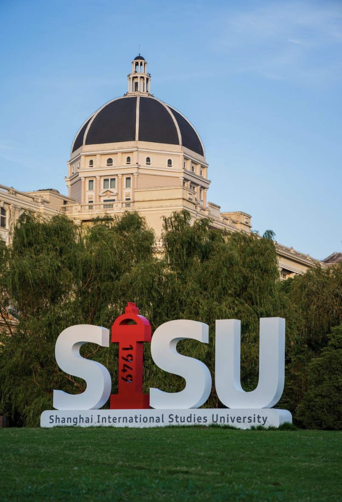
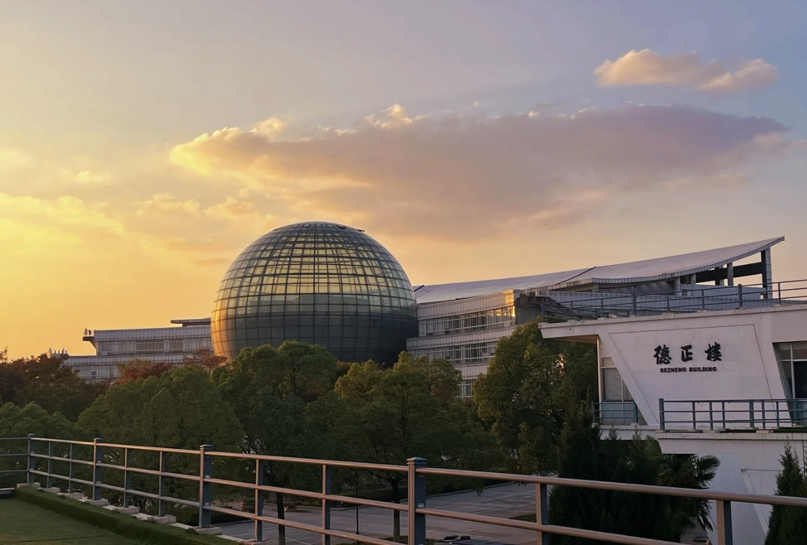

2025.09 — 2027.06
上海外国语大学
国际商务 · 硕士
国际金融贸易学院
从发现问题，到推动方案落地
围绕商品供给质量与信息展示，参与治理策略、展示方案及 AI 生图链路优化。
围绕海外租车保险业务，参与经营数据分析、调价策略与理赔服务流程优化。
从南京财经大学，到上海外国语大学

国际商务 · 硕士
国际金融贸易学院

国际经济与贸易（实验班）· 本科
国际经济与贸易学院
围绕活动节点与学生关注热点，完成文案、海报及推文排版。累计产出推文 20+ 篇，单篇平均阅读量 500+，推动活动学生报名率提升 15%。
结合校历与校外品牌合作，统筹策划院级、校级活动 10 余次，场均参与人数 500+，累计覆盖 5000+ 人次。
结合阅读、转发与现场参与数据，分析触达与转化，输出效果报告，优化后续选题和宣传策略。
喜欢旅游、看电影，也喜欢游泳和打羽毛球。
我的 MBTI 是 ENTP，不过最近“已 J”——
保留好奇心，也享受有计划的生活。
左右拖动，翻看日常 · 点击中间照片放大
商品运营 / 电商运营
2027 届 · 上海外国语大学硕士